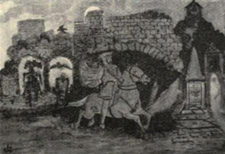

(a) Bread and cheese, with ale and porter.
(b) A glass of whisky, with again bread and cheese.
(c) A glass of rum and biscuits.
(d) A glass of brandy and currant bun.
(e) Wine and shortbread (or burial bread).
It was not, be it mentioned in passing, a very unusual thing for some of the company to enter the barn again, and undertake the “services” a second time.
The natural consequence of all this is obvious, but to a certain extent the situation could be saved by the use of a private receptacle called the “droddy bottle,” into which the liquor could be poured to be taken home, or at least carried outside. Before partaking of each individual “service” it was solemnised by the minister offering up an appropriate prayer, a clerical task which must have been trying in the extreme.
As instancing the prodigality of preparation in the way of food, notice may be taken of a funeral in the parish of Mochrum, where two bushels (160 lbs.) of shortbread were provided, and it is quite unnecessary to suggest that the supply of spirits would be in proportion.
The following account of funeral expenses, drawn from a Wigtownshire farmer’s book of expenses in 1794, may here be included, as it affords an excellent illustration of how the expenses of an ordinary funeral were swelled by the amounts paid for alcoholic liquor:—
| Mrs G.— | One gallon brandy | £0 | 18 | 0 | |
| 15 gills gin | 0 | 7 | 6 | ||
| Six bottles of wine | 0 | 17 | 0 | ||
| One gallon rum | 0 | 16 | 0 | ||
| To the coffin | 1 | 5 | 0 | ||
| To the mort-cloath and grave digging | 0 | 2 | 0 | ||
| To bread | 0 | 5 | 9 | ||
| J. C. for biding and walking and other attendance | 0 | 4 | 0 | ||
| J. S. for whiskie and ale at sitting up | 0 | 3 | 1 |
Of the expenses of funerals in a higher rank of life those incurred on the deaths of Grierson of Lag and his third son, John Grierson, afford full and interesting information. Mr John Grierson, third son of the Laird of Lag, died early in 1730, and to one Jean Scott the purveying of the meat and drink considered requisite for the friends attending the funeral was entrusted. The bill came to about £160 Scots.[36] When the Laird himself died, on the last day of the year 1733, there was a repetition of the feasting and drinking at the house of the deceased, at the kirkyard, and at an adjoining house, which had evidently been requisitioned for the accommodation of several of the gentlemen, among whom were Lord Stormonth, Sir Thomas Kirkpatrick, Maxwell of Carriel, and others who had come from a distance to assist. The account begins two days before the death of the Laird, and ends on January 14. In round figures the cost of the meat and drink consumed at the Laird’s funeral came to £240 Scots.
The following are the detailed accounts:—(75)
Accott. of the Ffunerals of Mr John Griersone.
| 1730. | To Jean Scott. | ||||
| Feb. 23rd. | 2 bottels clarit to these as set up all night wt ye corps | £0 | 3 | 0 | |
| do. | 1 bottel of brandy for do. | 0 | 1 | 6 | |
| Feb. 24th. | 1 bottel of clarit when the sear-cloath[37] was put on | 0 | 1 | 6 | |
| do. | 1 bottel clarit when the grave-cloaths was put on | 0 | 1 | 6 | |
| do. | At the in-coffining where the ladys was, 1 bottel clarit, 2 bottels white wine, and 1 bottel Cannary | 0 | 6 | 2 | |
| do. | In the beg room wt the Gentelmen before the corps was transported—2 bottels white wine | 0 | 3 | 0 | |
| do. | When the company returned—10 bottels clarit | 0 | 15 | 0 | |
| do. | 2 bottels brandy for Gentelmen’s Servts. | 0 | 3 | 0 | |
| do. | 2 bottels clarit to Sir Robert’s Servts. | 0 | 3 | 0 | |
| Feb. 26th. | 1 bottel clarit to Sir Robert’s Servts. | 0 | 1 | 6 | |
| March 2nd. | 1 bottel clarit to Sir Robert’s Servts. | 0 | 1 | 6 | |
| March 4th. | 1 bottel clarit to Sir Robert’s Servts. | 0 | 1 | 6 | |
| March 5th. | In the two rooms when at meat 22 bottels clarit | 1 | 13 | 0 | |
| do. | ffor the Servts. and Gentelmen’s Servts., 4 bottels of brandy | 0 | 6 | 0 | |
| do. | at night when the Gentelmen returned—25 bottels of clarit | 1 | 17 | 6 | |
| do. | 2 bottels brandy to Rockhall wt bottels | 0 | 3 | 0 | |
| March 6th. | 2 bottels clarit at dinr wt Sr Walter Laurie and Cariel | 0 | 3 | 0 | |
| do. | Ale from the 23rd of ffebr., till this day | 1 | 19 | 6 | |
| do. | To 1 baccon ham | 0 | 9 | 0 | |
| do. | To a rosting piece of beef | 0 | 6 | 6 | |
| do. | To a rost pigg | 0 | 2 | 6 | |
| do. | To 2 rost gease | 0 | 3 | 0 | |
| do. | To 1 rost turkey | 0 | 4 | 0 | |
| do. | To a calf’s head stwed wt wine and oysstars | 0 | 3 | 6 | |
| do. | To 2 dish of neats’ tongues | 0 | 8 | 0 | |
| do. | To 2 dish of capons and fowls | 0 | 6 | 0 | |
| do. | To a passtie | 0 | 7 | 0 | |
| March 6th. | To a dozn. of tearts | 0 | 6 | 0 | |
| do. | To 2 dozn. of mincht pys | 0 | 8 | 0 | |
| do. | To 1 quarter of rost mutton | 0 | 3 | 6 | |
| do. | To rost veal | 0 | 3 | 6 | |
| do. | To 1 barrel of oysters, 6 limmons, and other pickels | 0 | 4 | 0 | |
| do. | To eating for Tennents and Servants | 1 | 0 | 0 |
The following is a note of some of the items of expenditure at the funeral of the notorious Sir Robert Grierson of Lag himself:—
Grim legend clings around the account of Lag’s last illness and his funeral. “During the latter part of his life Sir Robert had taken up his abode in his town-lodging in Dumfries. It was an ancient pile of building of singular construction, facing the principal part of the High Street of the town, known as the ‘Plainstones.’ This old house was called the ‘Turnpike,’ from the spiral staircase, a characteristic of it, as of many of the old Edinburgh houses; it was situated at the head of what was called the Turnpike Close, and little more than two hundred yards from the Nith. The best known of the many legends regarding Lag is this: that when he came near his end, and was sorely tormented with gout, he had relays of servants posted so as to hand up from one to another a succession of buckets of cold water from the Nith, that he might cool his burning limbs—but the moment his feet were inserted into the water it began to fizz and boil.
In this old Turnpike house[38] Sir Robert died on the 31st December, 1733. It is related that on this occasion a ‘corbie’ (raven) of preternatural blackness and malignity of aspect, perched himself on the coffin, and would not be driven off, but accompanied the funeral cortège to the grave in the churchyard of Dunscore.
Moreover, when the funeral procession started, and had got some little way on the Galloway side of the Nith, it was found that the horses, with all their struggles, and dripping with perspiration, from some mysterious cause could move the hearse no further. Sir Thomas Kirkpatrick, of Closeburn, the old friend and comrade of Lag (and his relative), who was believed to be deep in some branches of the Black Art, was one of the mourners. This gentleman, the stoutest of Non-jurors, on this occasion swore a great oath that he would drive the hearse of Lag ‘though —— were in it!’ and ordered a team of beautiful Spanish horses of his own to be harnessed in place of the others. Sir Thomas mounted and took the reins, when the horses instantly dashed off at a furious gallop that he could in no wise restrain, and abated nought of their headlong pace till they reached the churchyard of Dunscore, where they suddenly pulled up—and died.”(76)
When the funeral cortège did start, as already indicated, curious though quite consequent sequels were far from uncommon. Solemnity and deep drinking only too frequently ended in unaffected hilarity or even dissension.
MacTaggart, in his Gallovidian Encyclopædia, has caught and well recorded the boisterous spirit of this grim funeral festivity, as the following graphic description amply shows:—
“At last the Laird o’ the Bowertree Buss gaed his last pawt, was straughted, dressed, coffined and a’; and I was bidden to his burial the Tuesday after. There I gaed, and there were met a wheen fine boys. Tam o’ Todholes, and Wull o’ the Slack war there; Neil Wulson, the fisher, and Wull Rain, the gunner, too. The first service that came roun’ was strong farintosh, famous peat reek. There was nae grief amang us. The Laird had plenty, had neither wife nor a wean, sae wha cud greet? We drew close to ither, and began the cracks ding-dang, while every minute roun’ came anither reamin’ service. I faun’ the bees i’ my head bizzin’ strong i’ a wee time. The inside o’ the burial house was like the inside o’ a Kelton-hill tent; a banter came frae the tae side of the room, and was sent back wi’ a jibe frae the ither. Lifting at last began to be talked about, and at last lift we did. ‘Whaever wished for a pouchfu’ o’ drink might tak’ it.’ This was the order; sae mony a douce black coat hang side wi’ a heavy bottle. On we gaed wi’ the Laird, his weight we faun’ na. Wull Weer we left ahin drunk on the spot. Rob Fisher took a sheer as we came down the green brae, and landed himself in a rossen o’ breers. Whaup-nebbed Samuel fell aff the drift too. I saw him as we came across Howmcraig; the drink was gaen frae him like couters. Whan we came to the Taffdyke that rins cross Barrend there we laid the Laird down till we took a rest awee. The inside o’ pouches war than turned out, bottle after bottle was touted owre; we rowed about, and some warsled. At last a game at the quoits was proposed; we played, but how we played I kenna. Whan we got tae the kirkyard the sun was jist plumpin’ down; we pat the coffin twice in the grave wrang, and as often had to draw’t out again. We got it to fit at last, and in wi’ the moulds on’t. The grave-digger we made a beast o’.”
A notable exception to the practice of the period was the funeral of William Burnes, father of the National Bard, who was borne from Lochlea to Alloway Kirkyard, a distance of twelve miles, not a drop of anything excepting a draught of water from a roadside stream being tasted.
The funeral festivities, however, did not end with the lowering of the dead into the grave. There yet remained the final entertainment at the house of the bereaved. If within reasonable distance at all the funeral party returned from the churchyard to partake of the entertainment known as the “draigie,”[39] or “dredgy.” Again the drinking was long and deep, with results that can only too readily be imagined.
But it must not be assumed that such scenes and proceedings passed without protest on the part of the Church and those who had the welfare of decency and morality at heart. The Presbytery of Penpont, for example, in 1736 issued the following warning to their own district:—
“Yet further how unaccountable and scandalous are the large gatherings and unbecoming behaviour at burials and ‘lake-wacks,’ also in some places how many are grossly unmannerly in coming to burials without invitation. How extravagant are many in their preparations for such occasions, and in giving much drink, and driving it too frequently, before and after the corpse is enterred, and keeping the company too long together; how many scandalouslie drink until they be drunk on such occasions; this practice cannot but be hurtfull, therefore ought to be discouraged and reformed, and people that are not ashamed to be so vilely unmannerly as to thrust themselves into such meetings without being called ought to be affronted.”
Despite protest and counsel, however, the custom of supplying refreshment to mourners in the form of “services” lingered until well into the nineteenth century.
Much good was, however, done in the south-west district of Scotland by the firm position taken up by Dr Henry Duncan of Ruthwell, Dumfriesshire, a personality whose memory is still held in the highest esteem and respect. The method adopted was characteristic of the man, and is described by himself in the Statistical Account of his Parish:—
“The present incumbent fell on a simple expedient by which this practice has been completely abolished. Having engaged the co-operation of some of the leading men in the parish, he drew up a subscription paper, binding the subscribers, among other less important regulations, to give only one service when they had the melancholy duty of presiding at a funeral themselves, and to partake of only one service when they attended the funeral of a neighbour. This paper was readily subscribed by almost every head of a family in the parish, and whatever was injurious in the practice was abolished at once, ... and, speaking generally, may be said to have effectually rooted out the former practice throughout the whole surrounding district” (March, 1834).
After the funeral, certain old rites and customs were carried out. On the death of a tenant the mart, or herezeld (heriot, or best aucht) was seized by the landowner to substantiate his title. The bed and straw on which the deceased had lain were burned in the open field. Concerning this practice Joseph Train in a note to Strains of the Mountain Muse, describes how, “as soon as the corpse is taken from the bed on which the person died, all the straw or heather of which it was composed is taken out and burned in a place where no beast can get near it, and they pretend to find next morning in the ashes the print of the foot of that person in the family who shall die first.”
A short reference may here be made to the custom of burial without coffins.
The spirit of economy went far indeed in these older days, for burial, particularly of the poor, took place either without a coffin at all, or they were carried to the grave in one of common and general use, from which they were removed and buried when the grave-side was reached.
A doubtful advance upon this method was the introduction of the “slip-coffin,” which permitted of a bolt being drawn when lowered to the bottom of the grave. A hinged bottom was in this way relieved, which left the poor dead body in the closest of contact with mother earth. The motive, of course, was economy, and its use practically restricted to paupers. On the authority of Edgar, author of Old Church Life in Scotland (1886), it is gratifying to note that none of these uncoffined interments had taken place in the South of Scotland for at least 150 years.
In this connection a story somewhat against the “cloth” may be given:—
“A worthy Galloway minister, feeling that the newly-passed Poor Law Act with its assessments was burdensome to his flock, seriously proposed to the Parochial Board of his district that to narrow down the rates a ‘slip-coffin’ should be made for the poor, out of which the body could be slipped into its narrow home. The proposal met with scant consideration, and during the rest of his lifetime the well-meaning man was known as ‘Slip.’”(77)
A Galloway Funeral of Other Days.
Sketch by J. Copland, Dundrennan.
Before the days of hearses the coffin was borne to the grave on two long poles or hand-spokes. Over the simple bare coffin the “mort-cloth” was spread, for the use of which the “Kirk-Session” made a charge, the money received being devoted to the relief of the poor of the parish. As superstitious custom refused the rites of Christian burial to those who died by their own hand, so was also the use of the “mort-cloth” withheld.
Until comparatively recent days the bodies of suicides were buried at the meeting of four cross roads, or at all events at some lonely, unfrequented spot, the remains having not unusually the additional indignity of being impaled by a stake practised upon them. It is of interest to note that the name of the “Stake Moss,” Sanquhar, may be traced to this callous practice.
A superstition of the churchyard itself that still lingers and is worthy of notice, is that the north side is less hallowed than the other portions of “God’s Acre.” The origin of this comes from the Scriptural description of the last judgment (Matthew xxv.), which tells how “He shall set the sheep on His right hand, but the goats on His left.”
A recent local writer has thus embodied the idea and its probable derivation:—
“This superstition (he says) is said to have originated in the New Testament story of the Day of Judgment, when the Lord on entering His house (the entrance of the old churches being at the west end, or on the south near the west) would separate the sheep from the goats—the former to His right hand, the south; and the latter to his left, the north. Our forefathers would not see their dear ones among the goats, ‘for evil,’ said they, ‘is there.’ This credulous imagining is not exemplified in the kirkyard alone. Many of our old pre-Reformation churches exhibit evidence of the superstition in the entire absence of windows in their north walls; and in general it would appear that in mediæval times there was a common belief in the evil influence of the north, and that thence came all kinds of ill.
“In Sanquhar Kirkyard it is evident that the superstition prevailed until comparatively modern times, for there are no headstones on the north side of the kirk earlier than the beginning of the last century, all the older monuments being to the south of the kirk, and at its east and west ends.”(78)
To the simple earnest dweller in the country there comes at times the thought that brings with it a comfort all its own, that after “life’s fitful fever” they will be quietly laid to rest underneath the green turf, within the shadow of the kirk itself. Of this the origin of Carsphairn parish, in the uplands of Galloway, gives telling proof; for in the year 1645 complaint was made to the Scottish Parliament that in the parishes of Dairy and Kells numbers of people had to be buried in the fields, because the houses in which they lived and died were twelve miles from a churchyard. The issue of this was, that the district of Carsphairn was erected into a separate parish, and the indignity of such burials came to an end.
Before closing a chapter devoted to “death custom” and “funeral ceremony,” the use of the “dead bell” must certainly be referred to.
In these old days when methods of conveying news and information were restricted, it was the routine practice when a death occurred for the “beadle” (sexton) to go, bell in hand, around the district, pausing at intervals to ring the “passing bell”[40] more particularly in front of the houses of friends of the deceased, announcing at the same time not only the death but also the day of burial. The usual form of his intimation which, with uncovered head, he delivered was:—
“Brethren and sisters,—I hereby let ye to wit that our brother (or sister), named (name, address, and occupation), departed this life at —— of the clock, according to the pleasure Almighty God, and you are all invited to attend the funeral on ——.”
Particular reference to this custom in the town of Dumfries is given in the Itinerary of John Ray, naturalist, who visited the town in August, 1662:—
“Here (he says) ... we observed the manner of their burials, which is this: when anyone dies the sexton or bellman goeth about the streets, with a small bell in his hand, which he tinkleth all along as he goeth, and now and then he makes a stance, and proclaims who is dead, and invites the people to come to the funeral.”
On the day of the funeral it was again customary for the “beadle” to ring the bell, walking in front of the funeral procession ringing it as he went. This is also noticed by Ray, who notes that “The people and ministers ... accompany the corpse to the grave ... with the bell before them.” This usage has passed to a form, common enough to this day, particularly in the country, of tolling the church bell as the funeral cortège approaches the churchyard.
In the scarce Book of Galloway it is recorded how “the beadle had rung the ‘passing bell[41] on the bellknowe of Penninghame,’ and it was heard again when the mourners approached the graveyard.”
The ringing of the “dead bell” had its origin in the superstitious idea that by this means evil spirits were held at bay.

Ghost Lore and Haunted Houses.
“There are many ghost stories which we do not feel at liberty to challenge.”
—Sir Walter Scott.
assing now to gather up the details of superstitious vestige as they present themselves in the form of ghost traditions and memories of ghost-haunted houses, we find in the district of Dumfries and Galloway much of interest to set forth.
Traversing from Western Galloway to Eastern Dumfriesshire, gleaning as we go, the legend connected with Dunskey Castle, which yet in ruined solitude stands sentinel over the rock-bound shore and restless sea at Portpatrick, first calls for mention.
The story goes back to the occupation of the Castle in the fourteenth century by Walter de Curry, a turbulent sea rover, who, becoming much incensed at the outspoken and fearless utterances of an Irish piper whom he had taken prisoner and compelled to his service as minstrel and jester, condemned the unfortunate man to a lingering death from starvation in the Castle dungeons.
Tradition asserts, however, that the piper found his way into a secret subterranean passage leading from the Castle to a cave on the sea-shore, from which, however, he was unable to find egress, and where he perished miserably.
Along this passage the troubled ghost of the piper was long reputed to march, backwards and forwards, playing the weirdest of pipe music, and so indicating, as was firmly believed, to the awe-stricken listeners above, the line of direction of the secret underground passage.[42]
Perhaps the best-known Galloway ghost story is that of the Ghost of Galdenoch Tower, in the parish of Leswalt. The Tower was at one time the property of the Agnews of Galdenoch, but falling on evil days their name disappeared from the roll of proprietors, when it was used as a farm-house. For this, however, it was given up, for no other reason than that it was firmly believed to be haunted. The tradition as told by Sir Andrew Agnew is as follows:—
“A scion of the house had fought in one of the battles for the Covenant, and after a defeat had craved food and shelter at a house near the scene of the disaster. He was admitted by the owner, a rough blustering fellow of Royalist leanings, who allowed him to share in the family supper; and after a long crack over the incidents of the day, let him make up a bed by the ingle-side fire. The young soldier rose early, and was in the act of leaving when his host barred his access to the door, grumbling that he doubted whether he had been on the right side the day before. Convinced that he meant to detain him, the youth produced his pistol and shot his entertainer dead; then rushing to the stables, saddled up, and made his way to the west.
Arrived safely at the Galdenoch, the fatted calf was killed, and having fought all his battles over again round the family board, he went to bed. But hardly had the lights been extinguished in the tower than strange sounds announced a new arrival, which proved to be the ghost of the slain malignant, who not only disturbed the repose of his slayer, but made life unendurable to all within.
Nightly his pranks continued, and even after a change of owners the annoyance was continued to the new tenant and his family. One cold winter’s night they sat round the kitchen fire playing a well-known game. A burning stick passed merrily from hand to hand:
‘About wi’ that! about wi’ that!
Keep alive the priest-cat!’
The spark was extinguished, and the forfeit was about to be declared, when one of the party, looking at the hearth, which was now one brilliant mass of transparent red, observed, ‘It wadna be hannie to steal a coal the noo;’ but hardly were the words out of his mouth when a glowing peat disappeared as if by magic, leaving as clear a vacuum in the fire as when a brick is displaced from a solid archway. ‘That beats a’,’ was re-echoed through the wondering group; and but a few moments elapsed before there was a cry of ‘Fire’ and the farm-steading was in flames. In the thatch of the barn that identical ‘cube of fire’ was inserted, and no one doubted that it had been done by the ghost. The range of buildings was preserved with difficulty by the united exertions of the party.
The tenant’s mother sat one morning at her spinning-wheel; an invisible power bore her along, and plunged her in the Mill-Isle burn, a voice mumbling the while, ‘I’ll dip thee, I’ll draw thee,’ till the old dame became unconscious. Great was the surprise of the family at dinner-time when grandmamma was missed. Every corner of the buildings was searched. The goodman and his wife became alarmed, while the lads and lassies ran madly about interrogating one another with ‘Where’s granny?’ At last a well-known voice was heard—‘I’ve washed granny in the burn, and laid her on the dyke to dry!’ Away the whole party ran; and sure enough the poor old woman lay naked on the dyke, half dead with cold and fright.
Several of the neighbouring clergymen tried to lay this ghost, but all in vain. If they sang, the ghost drowned the united efforts of the company. Eventually, however, it was laid by the Rev. Mr Marshall of Kirkcolm, already referred to as a zealous prosecutor of witches, by the almost unclerical method of roaring and shouting it down.”(79)
On the confines of Stoneykirk parish, in the Moor of the Genoch, there is a plantation locally known as “Lodnagappal Plantin’,”[43] concerning which report tells of an apparition in the form of a headless woman who almost invariably carried a light for the dire purpose of luring the unwary to death in the treacherous moss-holes so numerous in the neighbourhood.
Fuller details are available of yet another “white woman” and her unwelcome methods. Early last century, when the mail packet crossed from Portpatrick to Ireland, a carrier, who lived at High Ardwell, regularly journeyed backwards and forwards to Portpatrick to bring supplies for the district. On his way home he was more than once alarmed and troubled by a woman in white, who stopped his horse and even caused his cart to break down. Once, indeed, the horse was so affected that it became quite incapable of moving the load, compelling the carrier in great distress to unyoke, and, mounting the horse, to make for home. His fears were not much lessened by finding that the white lady was seated behind him.
The appearances of the ghost became more frequent as time went on, and eventually the white woman manifested a desire to embrace the carrier, indicating that if he yielded even only to listen once to her whispered devotion he might be freed altogether from future interference. The carrier, after a good deal of doubt and hesitation, at last yielded, but, wishing to have some substantial barrier between himself and his ghostly lover, stipulated that she should come to the little back-window of his cottage on a particular night. The appointed time came, but the carrier, still very doubtful, had planned accordingly. Cautiously and partially was the window opened. The white figure was there. Bending down to what appeared to be the man’s face—but what was really the skull of a horse held towards her—there was a swift savage thrust of the ghostly face and half of the protruding horse’s skull was severed. Thwarted in this unexpected way, the evil spirit slunk away, muttering “Hard, hard, are the banes and gristle of your face!” At least that is what the tradition tells.
Another tale concerns Auchabrick House, in Kirkmaiden, not far from Port Logan. The usually accepted story is pretty much as follows: The troth of a young lady of the house was plighted to a young gentleman whose fortune was not quite equal to his rank in life. It was the days of privateering, and to amass some means the young fellow joined an enterprise of this kind, and was fortunate enough to find himself aboard a superior and successful vessel.
Whilst abroad he sent home to the lady of his heart a silk dress and a considerable sum of money. These, however, fell into the hands of an unscrupulous brother, who appropriated them to his own use. Perplexed at not receiving news from home and acknowledgment, the lover wrote again and again, but the letters were always intercepted by the brother.
Disaster came, and the wanderer never reached home to learn the true state of matters, but his ghost came to haunt the place. Fasten the doors as securely as they might, it always obtained an entry, and the scratch of a ghostly pen was heard writing and rewriting the stolen letters. Different plans were tried to relieve this eerie state of affairs. On one occasion a Bible was placed behind the door through which the ghost seemed to pass, but this was followed by terrifying and distracting noises, while the house itself was shaken as if by storm and gale.
It was also believed that the semblance of the ship on which the wanderer pursued his calling as a privateer was at times seen to sail along a field above the house.
A variation of the main story is that it was a brother of one of the former ladies of Auchabrick whose shade haunted the place. He had fallen from his horse and been fatally injured, his ghost taking the form of a young man, booted and spurred, riding a grey horse.
At Cardrain, in the same locality, there is another tradition of an apparition on horseback which time and again rode up to the house, made fast the horse to a rope hanging from the thatch, then wandered all through the place.
In the neighbourhood of Tirally the shade of a departed medical man was believed to frequent and wander along the sea-shore. There is an authentic account of the house he occupied being of necessity given up by the tenant who succeeded him after his death, on account of the strange persistent and disturbing noises heard in it.
Passing from the Rhinns of Galloway to the Machars, through the district of Glenluce, the surprising story of the Devil of Glenluce should naturally find a place. It will, however, be included in the Appendix, in all its quaintness, as it occurs in Satan’s Invisible World, published in 1685.
In the history of the town of Wigtown no character stands out in stronger relief than Provost Coltran, proprietor of Drummorall. In 1683, along with David Graham, brother of Claverhouse, and Sir Godfrey M‘Culloch, he was appointed to administer the test to the people of Galloway, and was Chief Magistrate at the drowning of the Martyrs on Wigtown Sands (May 11th, 1685). His private character does not seem to have been beyond reproach, and it was commonly said that in his life time he had sold himself to the Devil.
The story still lingers that at his death the windows of his house looked as if they were in a blaze of fire, clearly indicating to the popular mind that the Devil was getting his own, and for long afterwards his ghost, a terrifying figure snorting fire from his nostrils, walked the earth. Even the house where he lived and died was for many years avoided after night-fall.
Not far from the village of Bladnoch, on the farm of Kirkwaugh, is a spot known as the Packman’s Grave, round which a grim story lingers:—
“Tradition has it that an enterprising packman lived in or near Wigtown long ago. He had a consignment of cloth on board a vessel which put into a local port. The ship was plague-stricken, and the people in the district, fearing that the infection might spread by means of the packman and his cloth, seized both the merchant and his wares, and taking them to Kirkwaugh dug a deep grave, in which they were deposited—the packman alive. Even until lately people imagined they saw lights and heard knocks at the spot, which gets the name of the Packman’s Grave to this day.”(80)
Near Sorbie is the farm of Claunch, concerning which there is an old-world memory of a spectral carriage and pair of horses. The origin of the tradition is unknown, but the following is an authentic account of its appearance furnished by a correspondent:—
“I can, however, recall the strange experience of one who avowed that it had come within his ken. He was a blacksmith by trade, and had been doing some work at the farm. It was a fine moonlight evening when he gathered his tools together and started on his walk to Whithorn, where he lived. It chanced that the farmer by whom he had been employed during the day accompanied him as far as the entrance to the farmyard. As they were crossing the courtyard, what certainly seemed a spectral carriage and pair of horses galloped past them, and in another moment disappeared as if it never had been.
‘What in the name of wonder was that?’ ejaculated the smith; to which the farmer replied—
‘It’s mair than I can tell—but it’s no’ the first glint o’t I hae gotten, although I haena seen’t aften. But dinna ye come owre what ye hae seen—nae guid’ll come o’ talkin’ aboot it.’”(81)
The old parish manse of Whithorn, which adjoined the churchyard near to its main entrance, and which was demolished a good many years ago, had rather an uncanny reputation, but nothing very definite can be gleaned to explain this. It certainly was, however, avoided after darkness fell. A little short lane off the public road, between the north end of Whithorn and the Bishopton Crofts, is associated with an appearance denoting foul play towards a very young child. But the most important ghostly reminiscence that can be gathered in this locality refers to the ghost at Craigdhu, in the parish of Glasserton, on the shore-road from Whithorn to Port-William. The following account was communicated by a native of the district:—
“Many rumours used to be afloat in my younger days of people being terrified by some unearthly shape or other which was believed to show itself at Craigdhu. Such stories were, however, rather conflicting, some declaring that it was a spectre of human form and proportions, while others held that it was more like a huge quadruped of an unknown species; but I confine my notes to personal testimonies of three individuals whom I knew. The first of these was a hard-working farm servant, who insisted that he had seen the something—whatever it was—not once or twice, but repeatedly. The second testifier was a wood-sawyer, who had occasion to spend a night in the house belonging to the farm. His first consciousness of the ghost’s presence was when he was ascending the stair to the sleeping apartment, which a companion and himself were to occupy. This was manifested by the distinct sound of a lady’s silk dress passing him and his bed-fellow on their way to the garret which was to be their dormitory. But that, though eerie enough, was nothing to what was to follow. As soon as they had extinguished their candle and crept into bed something leapt on the bed and dealt the unfortunate couple some well directed blows with what seemed like a heavy blunt instrument. The third witness was an ex-magistrate of Whithorn, who told that he was almost run to earth by the goblin. He was just able to evade it by reaching the farm-house door as he was actually being overtaken. Throwing himself against the door, he was admitted by the farmer himself without a moment’s delay. The latter at once conjectured the cause of his breathlessness and terror—‘Aye! come in, my frien’, come in. I ken gey weel what has happened; but ye’re safe here, an’ as welcome as I can mak’ ye, to bide till daylicht.’”(82)
The roofless ruin of the little pre-Reformation Church of Kirkmaiden (in Fernes) in Glasserton parish, so beautifully situated on the very verge of Luce Bay, has among other associations a tradition of supernatural intervention and tragedy.
Many tides have ebbed and flowed since the night of a merry gathering in the old house of Moure, the original home of the Maxwells of Monreith. As the evening wore on, some harmless rallying and boasting took place concerning bravery and indifference towards darkness and things uncanny. Among the guests was a young man in the hey-day of youth and recklessness, who rashly wagered that he would that very night, and without delay, ride to the Maiden Kirk and bring away the church bible as a proof that he had been there. Amidst much careless talk and banter he galloped off. The night wore on, but the young man did not return. As it was but a short ride from Moure to the Kirk the greatest anxiety prevailed. Next day, in a bleak spot, his dead body was found, as also his horse lying stiff beside him. Of robbery and violence there was no evidence, but the entrails of both man and beast had been carefully drawn from their bodies, and were found twisted and entwined round some old thorn bushes close beside them. It was afterwards found that he had reached the church and was on his way back.
Some ten miles northward, along this eastern shore of Luce Bay, are the ruined Barracks of Auchenmalg, built in the days of the free-trade as a means of suppressing the traffic. A whisper of the old building being haunted exists, but further than that the idea is associated with some deed of violence in the smuggling days nothing very definite can be gleaned.
Passing from Wigtownshire, by way of Kirkcowan, towards Kirkcudbrightshire, it may be noted that Dr Trotter has preserved a ghost story concerning Craighlaw House, originally a fifteenth century square keep, now the oldest part of a mansion-house of three distinct periods. The story conveys that the ghost appeared on one occasion by the side of the large arched kitchen fire-place, during the absence of the cook at the well. Much alarmed at the sight on her return she screamed and collapsed. Her master, sceptical of anything supernatural, fervently expressed the wish that he himself might meet the cause of the alarm, which he actually did, and shot at it with no effect, much to his own alarm. Dr Trotter adds that “since the ghost was laid everything has been quiet.”(83)
In Kirkcudbrightshire, still passing eastwards, the legends and eerie associations that cluster around Machermore Castle first meet us, and call for narration.
The following details are taken from an article entitled “The White Lady of Machermore,” contributed to the Galloway Gazette some years ago by James G. Kinna, author of the History of the Parish of Minnigaff:—
“Pleasantly situated on the east bank of the Cree, about a mile from the town, Machermore Castle is a prominent feature in the landscape as the traveller approaches Newton-Stewart by rail from the south. For wellnigh three hundred years the grey old Castle of Machermore bravely weathered the storms, and it would have continued to do so unscathed had not modern times necessitated structural changes. The Castle now presents a happy instance of the blending of the old and new styles of architecture—an adaptation of the past to present requirements.
It is a curious circumstance that although certain spots near Machermore Castle have always been associated with the name of the White Lady no one has ever actually seen the mysterious being. And yet there are few of the older residenters in the parish of Minnigaff who have not heard their grandfathers speak of her as a reality.
Machermore Castle is believed to have been built about the latter end of the sixteenth century. Tradition says that it was at first intended to build the Castle on the higher ground, a little to the north-east of the present site, but that during the night the foundation stones were always removed, so that what was built during the day was carried off by unseen hands and deposited in another place. As it was no use to strive against the supernatural, the Castle was eventually built where the materials were always found in the morning.
In the Castle itself was a room reputed to be haunted. In this instance the particular apartment was in the north-west angle, and was always known as Duncan’s room. Projecting from the top corner of the outer wall in the same part of the Castle was the finely-carved figurehead of a man. A close inspection revealed the fact that the neck was encircled by an exquisitely-chiselled lace ruffle of the Tudor period. This piece of sculpture was always known as Duncan’s head. On the floor of Duncan’s room there was the mark of a bloody hand, distinctly showing the impress of the fingers, thumb, and palm. It was said that removing that part of the flooring had been tried so as to eradicate all trace of the bygone tragedy, but the mark of the bloody hand appeared in the new wood as fresh as before. From the history of Machermore at least this legend is ineffaceable, and the annals of the parish of Minnigaff are incomplete which do not contain a reference to this remarkable phenomenon.
It is a good many years since the incident I am about to relate took place, but the circumstances are as fresh in my memory as if it had happened but yesternight; nor am I ever likely to forget my first and only visit from the White Lady. On that occasion I happened to be the sole occupant of Duncan’s room, but as usage had worn off all prejudice against the occupation of that particular bedroom amongst the members of the household, little or no importance was attached to the general belief that the room was haunted.
It was a midsummer night, and I had been asleep, but had awakened, and lay wondering what time it was, just as a clock on one of the landings struck twelve. As the last stroke died away I distinctly heard a footstep coming upstairs. All being perfectly quiet in the Castle at that hour, I could hear the slightest sound. Nearer and nearer to the door of my room came the midnight visitant, until it seemed to enter; but although the room was flooded with moonlight I saw no one come in, yet I was perfectly conscious that some mysterious presence was near me. I was not in the least frightened at the time. Although wide awake I could see nothing. A peculiar sound resembling the opening and shutting of a stiff drawer now came from the corner of the room where was the impress of the bloody hand. I then sat up in bed and called out, “Who’s there? what do you want?” but got no answer. After this I must confess to feeling uncomfortable, a state which changed to something like positive fear as a rustling sound resembling that made by a silk dress passed out of the room. All this time the door remained closed. Nothing, therefore, possessing a material body could either have entered or left the room without its entrance or exit being noticed, but although I looked in the direction from which the moving sound proceeded nothing could be seen. It was with a sense of relief that I listened with bated breath and palpitating heart to the retreating footsteps as they slowly descended the stairs and gradually died away in the distance, and then all was silent again, ... and here the mystery rests.”
There is a tradition that somewhere about Machermore Castle there is buried under a flat stone a kettle full of gold: